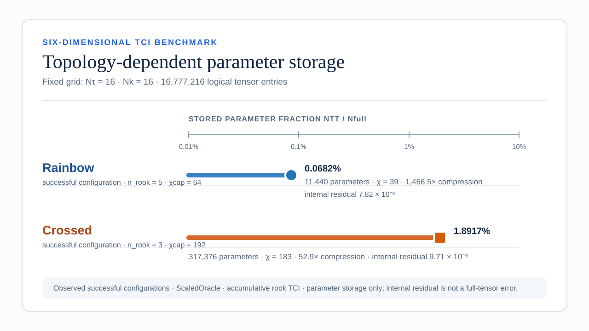

Research & Scientific Computing
My work bridges first-principles electronic structure methods with modern tensor-network algorithms and high-performance scientific software development to tackle many-body electron–phonon physics.
Polaron Many-Body Theory & High-Order Feynman Diagrams
High-order electron–phonon diagrammatic calculations traditionally suffer from exponential dimensional scaling and sign problems. We introduce Quantics Tensor Cross Interpolation (QTCI) to represent multi-dimensional vertex corrections in low-rank tensor train formats.
- check_circle Evaluates 10D+ Feynman integrals with deterministic polynomial scaling
- check_circle Achieves up to 2,000,000× parameter compression on benchmark grids
- check_circle Extends diagrammatic methods beyond Migdal's approximation to strong coupling


Electron–Phonon Coupling & Crystal Symmetry
Through systematic DFT+U and electron–phonon coupling simulations on transition-metal oxides (BiVO₄, CeO₂), we explore how local symmetry distortions drive small-polaron formation, anisotropic hopping, and optical absorption signatures.
- check_circle Identified asymmetric Fröhlich hole vs Holstein electron polarons in CeO₂ (PCCP 2025)
- check_circle Uncovered multi-phase polaron formation energies across 4 BiVO₄ polymorphs (JPCC 2025)
- check_circle Bridged microscopic polaron hopping barriers with macroscopic carrier mobilities
Open-Source Scientific Software
Developing modern, production-grade numerical libraries and visualization tools with rigorous validation and zero-allocation execution.
PolaronTCISolver
A C++23 Tensor Cross Interpolation library for high-dimensional electron–phonon diagram kernels, with explicit numerical diagnostics and independent-reference workflows.

CrystalCanvas
Cross-platform crystal visualization and manipulation engine utilizing modern hardware acceleration for crystallographic modeling, Miller slab cleaving, and DFT workflow preparation.
Exporters: VASP, Quantum ESPRESSO, LAMMPS